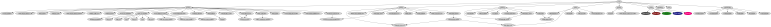
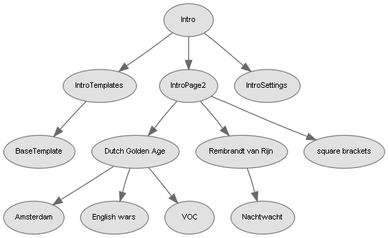

parent nodes: GlobalAttributesStructureGraphs | ThisWiki | WikidPadSpecials | WpInsertions | WpOptionsStructureGraphs
Structure Graphs
Content:
Back
General
As a pilot activity, WikidPad offers the possibility, to create graphs of relationships between wiki pages and/or their attributes. It is "work in progress" and meant as an example of what cóuld be done in this area and therefore is not a fully worked out implementation. They are waiting for somebody with a good idea for their use.
Currently - 1.9 beta 20 - there are two (2) graphs available:child graphrelation graph
They are available as both a menu option ánd a graph insertion and need the GraphViz application suite to be properly installed. Both at the moment create graphs for the entyre wiki; there is no possibility yet, to limit it to a specific set or subtree of pages.
The menu options
In the "plugins" menu you can find four (4) options related to graphs:Show child graphShow child graph sourceShow relation graphShow rel. graph source
These options all show their output in the current tab, that temporarily becomes a "graph window". To close it and return to editor or preview, select the regular option, you would normally use to activate it, like:menu View: "Switch Ed./Prev." or Ctrl-Shift-Spacemenu View: "Show editor" or Ctrl-Shift-Amenu View: "Show preview" or Ctrl-Shift-S
The "show ... graph" options show the actual graph in the window; the "show ... source" options show the "graphviz.dot script" that was generated to create the graph specification for GraphViz. You could copy that and use it as the basis for your own graphics insertion.
The insertions
Instead of using the menu options, you can also make them part of a wiki page, by using a "graph" insertion. This will show the graph, as if it were an image you inserted in the page. The graph will of course only be visible in preview and in the html export of the page. The formats for both insertions are:[:graph.child:][:graph.relation:]
The insertions do not have a "show .... source" variant; they only show the actual graph.
Remarks
• Undefined pages
The graphs do not take undefined pages into account; those are ignored and will not be part of the graph.
• Color attributes
If a page to be included in a graph has a valid [color: color name] attribute, then it's node color in the graph will be colored accordingly.
• Graph size
The resulting graphs are quite large, partly due to the (default) font size used for the nodes, but even with a smaller font size the graphs easily run "of the screen". The child graph for thís help.wiki is horrendously large and actually quite unuseable. Also due to their nature these graphs have a limited use; if the number of relationships becomes too large, their lines become difficult to follow. It is adviseable to only use these graphs for a limited number of nodes.
As an example see the image below; it shows a child graph for an 81 page simple wiki and is resized to 6% of it's actual size as shown in the page window.

• Processing time
The graphs take some time to create and specifically to display, mainly due to their size. On an x86 2GHz, 1Mb computer running Win XP SP3 it takes close to 5 minutes, for a child graph for thís help.wiki to be created and shown. So be prepared to go for a coffee brake, if you plan to try it.
• Result is an image
What is shown in WikidPad is an image. The graph is created as a .png image in the "Temp" directory. It is this image that is then shown in the WikidPad page window.
Top
Child graph
This graph shows the parent->child relationships for all the pages in a wiki. Below is an image of a graph for a small wiki.
Remarks:The above image is downsized to 60% of it's real size.
Top
Relation graph
General
This graph shows relationships between wiki pages. It does this based on attributes on the pages, but these must be a specific type of attributes: their value must be the name of an existing page, like for instance is the case for the "template" attribute.
Suppose for example you have a page describing the "Sea Gull", you could then put the attributes:
on the page and íf "Bird" and "Fish" were other existing wiki pages, then this would result in the structure graph beneath:
You could add the same attributes to wiki pages about other animals, resulting for instance in a structure graph like this:
Remark:The above images are downsized to 75% of their real size.
Global Attributes
Two global attribute are available that you can use to limit the attributes that are to be included in the graph. These are an "include" and an "exclude" attribute. As is the case for all global attributes, also these attributes apply to the whole wiki, regardless of the page they are placed on.
• The include attribute
The include attribute has the format: [global.graph.relation.include: att.key1; att.key2; ....]. When used any relation graph wil only show relationships for the specified attributes. All other attributes are excluded.
Example: [global.graph.relation.include: isA; eats] only includes pages with "isA" and "eats" attributes.
• The exclude attribute
The exclude attribute has the format: [global.graph.relation.exclude: att.key1; att.key2; ....]. When used any relation graph wil exclude the specified attributes and not show relationships for them.
Example: [global.graph.relation.exclude: alias; template] excludes "alias" en "template" attributes from the graph.
Remarks:
• If a specified attribute key concerns a structured key, then a specified partial key name includes all of it's subkeys. So [global.graph.relation.include: contact] would include both all [contact.private: value] ánd all [contact.office: value] attributes and [global.graph.relation.exclude: html] would exclude "html.textcolor" "html.bgcolor", "html.linkcolor", etc.
• If bóth a global.include ánd a global.exclude attribute are specified, then only the global.exclude attribute is taken into account and the global.include attribute is ignored entirely. This will be changed to a more logical behaviour in an upcomming version of WikidPad.
Remarks
• Current page
The function defaults to including the current page in the graph, even if that page does not have a valid reason to be in that graph [4].
• Color attributes
The function defaults to including all pages in the graph that have a valid [color: color name] attribute, even if those pages do not have a valid reason to be in that graph [4].
Top
[4] This behaviour will be corrected in an upcomming version of WikidPad.
Graph presentation
General
The presentation of the graphs can be influenced using the "Wiki / Options / GraphVizStructure" options. These options allow to set the following presentation properties for the graphs:
node: font name and sizenode: background and border coloredge: color
Reducing the font size also reduces the overall size of the resulting graph.
Example
Below is an example of the same child graph, with the following presentation settings:node: font = Arial 8node: background = #E1E1E1node: border = #808080 (grey)edge: color = #696969 (dimgrey)

Remark:Because of the font size 8 (and different layout), the screenshot did not have to be reduced in size and is shown at 100% of it's real size.
Colors
GraphViz accepts the standard HTML hex values and cross browser names for the specification of colors. The ""Wiki / Options / GraphVizStructure" options however only accept the 6 digit color values, nót the color names. For complete lists of color values and names see:
The options page supports you in specifying the colors by means of a color selector dialog. This however is a standard dialog, that is not much use, if it are specific HTML colors that you are after.
Top
Settings
Global attributes
• [global.graph.relation.exclude: attribute keys to exclude]
Sets the default for attribute keys that should be excluded from relation graphs; default = None.
Example: [global.graph.relation.exclude: alias; template] excludes "alias" and "template" from the graph.
• [global.graph.relation.include: attribute keys to include]
Sets the default for attribute keys that should be included in relation graphs; default = All.
If global.graph.relation.exclude is also set, then global.graph.relation.include is ignored.
Example: [global.graph.relation.include: intro; help] includes only "intro" and "help" in the graph.
Top
Options
Application settings: see StructureGraphs
Remarks:
• Options that are left empty use the "GraphViz" default settings.
• Colors are specified using standard 6 digit HTML color values.
• Node font name
• Node font size
The name and size of the font to use for the node label
• Node border color
The color of the small border line surrounding each node
• Node background color
The color of the node background.
Remark: If the wiki page described by a node has a "[color: color name]" attribute then that color attribute overrules this option setting.
• Edge color
The color of the edges connecting the nodes.
Top
previous: Back
parents: GlobalAttributesStructureGraphs, ThisWiki, WikidPadSpecials, WpInsertions, WpOptionsStructureGraphs
[help.status: done]